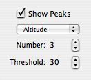
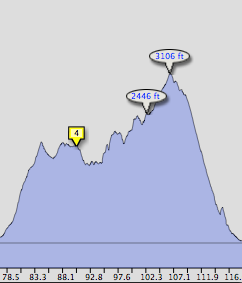

Displaying Peak Data in the Activity View
A number of peak data points can be displayed for various data types in the activity view by checking the "Show Peaks" button. By default, the altitude peaks are shown as in the example below.
 
To display peaks:
- Use the disclosure triangle in the lower right corner of the Activity View to make the activity settings drawer slide out
- Click the "Show Peaks" button
- Set the type of peak data, if desired, by using the popup under the "Show Peaks" button
- Set the number of peaks to display, and the threshold (minimum number of data points between peaks)